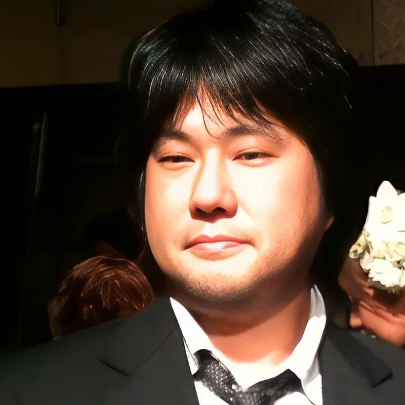
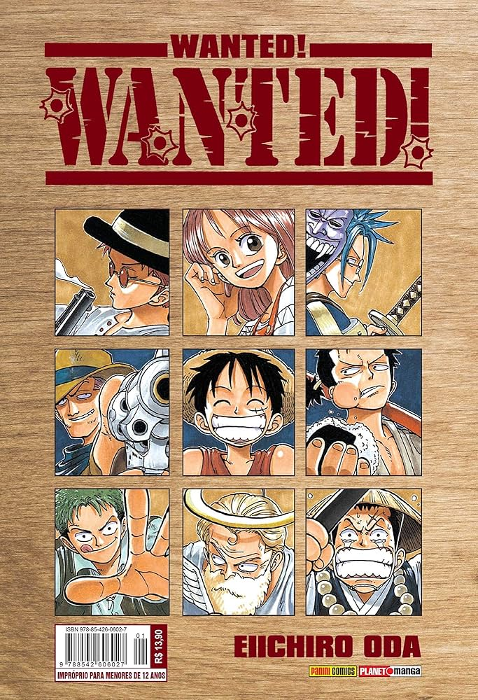
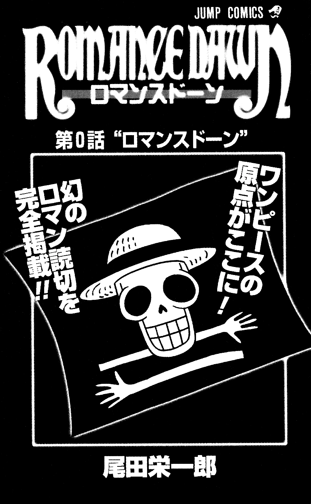
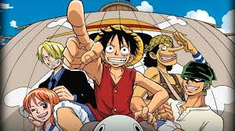
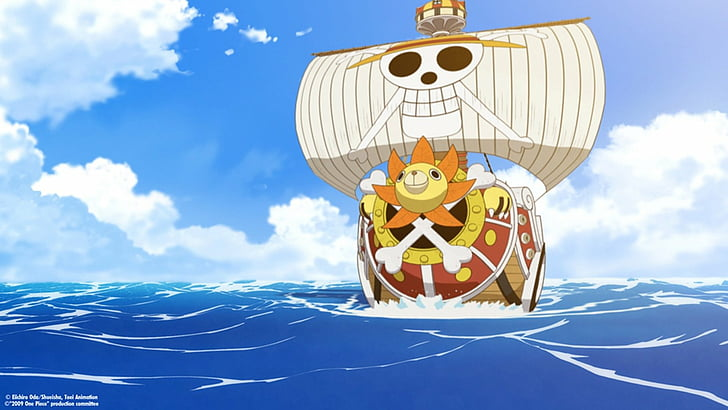
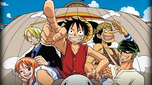
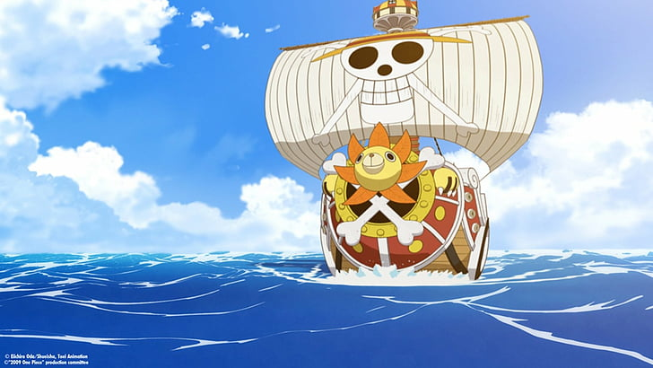

Eiichiro Oda
Criador de One Piece, uma das séries de mangá mais icônicas e bem-sucedidas de todos os tempos. Nascido em 1º de janeiro de 1975, em Kumamoto, Japão, ele se destacou desde jovem pelo talento no desenho e pela paixão por criar histórias que capturam a imaginação de milhões de leitores ao redor do mundo.

Vida Pessoal
Infância e Influências: Oda cresceu admirando mangakás como Akira Toriyama, criador de Dragon Ball, e obras como Vicky, o Viking, que influenciaram o tema náutico de One Piece. Desde criança, ele dizia que queria ser mangaká para evitar ter um "trabalho convencional".
Família: Ele é casado com Chiaki Inaba, uma ex-modelo que interpretou Nami em um evento de One Piece. Eles se conheceram durante uma convenção e se casaram em 2004. O casal tem duas filhas.
Estilo de Vida: Oda é conhecido por sua dedicação extrema ao trabalho. Ele dorme apenas cerca de 3 horas por noite, dividindo seu tempo entre desenhar, revisar roteiros e planejar capítulos futuros. Apesar de sua rotina intensa, ele mantém um senso de humor peculiar, frequentemente demonstrado em entrevistas e nos SBS (seções de perguntas e respostas nos volumes de One Piece).
Carreira
Início como Assistente: Oda começou sua carreira como assistente de mangakás renomados, como Nobuhiro Watsuki, autor de Rurouni Kenshin. Durante esse período, ele aprimorou suas habilidades artísticas e aprendeu sobre o ritmo e a estrutura de mangás semanais.
Obras Iniciais:
Wanted! (1992): Uma coletânea de histórias curtas publicadas antes de One Piece. Este trabalho ganhou o Prêmio Tezuka para novos talentos e trouxe visibilidade para Oda.
Romance Dawn (1996): Um protótipo de One Piece, publicado em duas versões diferentes. Esses capítulos introdutórios já apresentavam Luffy e os temas de liberdade e aventura que se tornariam centrais na obra principal.
 One Piece
Estreia: One Piece foi publicado pela primeira vez na Weekly Shonen Jump em 22 de julho de 1997. O mangá rapidamente ganhou popularidade e se tornou um marco da cultura pop japonesa.
Impacto: Até hoje, One Piece já vendeu mais de 500 milhões de cópias, tornando-se o mangá mais vendido da história. Ele também foi adaptado para um anime de longa duração, filmes, jogos e recentemente uma série live-action da Netflix, com supervisão direta de Oda.
Temas e Estilo: One Piece aborda temas como liberdade, amizade, lealdade e a busca por sonhos. O estilo único de Oda combina humor, ação e momentos emocionantes, sempre surpreendendo os leitores com reviravoltas criativas e um vasto mundo cheio de personagens memoráveis.
Reconhecimentos: Oda recebeu inúmeros prêmios por One Piece, incluindo homenagens por sua contribuição à cultura japonesa e ao mangá. Em 2022, ele foi reconhecido como uma das figuras mais influentes da indústria criativa global.
 



Outras Contribuições
Colaborações e Participações Especiais: Oda contribuiu com ilustrações para outros projetos, como em homenagens a Akira Toriyama. Ele também foi consultor criativo para eventos e exposições de One Piece.
Influência no Live-Action: Na série da Netflix, Oda desempenhou um papel central na adaptação, garantindo que o espírito de One Piece fosse respeitado. Ele trabalhou diretamente com os roteiristas e o elenco para preservar a autenticidade da obra.
Curiosidades
Paixão por Piratas: O interesse de Oda por histórias de piratas surgiu na infância, inspirado por livros e filmes, como A Ilha do Tesouro.
Aparência de Oda: Ele raramente aparece publicamente, mantendo uma aura de mistério. Quando faz aparições, usa um desenho próprio como avatar, retratando-se como um peixe ou um samurai.
Legado Duradouro: Oda já afirmou que tem o final de One Piece planejado desde o início, mas adapta a história com base no desenvolvimento dos personagens e nas reações dos fãs.
Legado
Eiichiro Oda não apenas revolucionou o gênero de mangás shonen, mas também criou uma obra que transcende gerações. Ele continua a inspirar criadores e fãs com sua criatividade e dedicação, deixando um impacto duradouro na cultura global. Sua jornada é um exemplo de como sonhos e trabalho duro podem levar a conquistas extraordinárias.